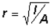

Very slender are difficult to handle on a construction site. They tend to be inadvertently bent or buckled during fabrication. The slenderness check is an evaluation to reduce the likelihood that this sort of accidental damage will occur.
The slenderness check performed by the Bridge Designer 2016 is based on the American Institute of Steel Construction design code. A member passes the slenderness check if its slenderness ratio, L/r, meets the following condition:
L/r < 300
where
L is the length of the member
r is the radius of gyration of the member cross-section
The radius of gyration, r, can be calculated as

where
I is the of the member
A is the of the member
If a member fails the Slenderness Check, it is considered to be unserviceable.
In the Bridge Designer 2016, the slenderness check is performed automatically as you draw a new member or change the cross-section properties of an existing member. If a member fails the slenderness check (i.e., if L/r is greater than 300), then that member is highlighted in magenta. If one or more members fail the slenderness check, then the Bridge Designer 2016 will not perform the Load Test.
To fix a member that fails the slenderness check, decrease its length or increase its . For a given member size, hollow tubes have lower L/r than solid bars; thus, a solid bar that fails the slenderness check might also be fixed by changing it to a hollow tube.
To see the maximum length that a member of a given and member size can be without failing the slenderness check, click the Report Member Properties button. The maximum length is indicated by a vertical line that is colored magenta.
To obtain the numerical values of A and I for a given cross-section and member size, click the Report Member Properties button.